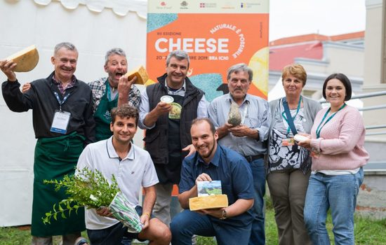

Un tempo la giuncata si trovava in ogni mercato, ma oggi - per via della deperibilità - non si produce
quasi più ed è principalmente relegata al consumo familiare.
Il Presidio nasce per promuovere questo prodotto semplice e antico, ma soprattutto per sostenere la
pastorizia in un’area segnata gravemente dal terremoto del 2016 e 2017.
Le aziende del Presidio hanno subito danni alle abitazioni, alle stalle, ai fienili, ai caseifici. In un
caso, è crollato l’intero agriturismo con il punto vendita.
I Monti Reatini erano una zona turistica: in estate soprattutto i romani si trasferivano nei suoi
piccoli borghi per trascorrere le vacanze. Oggi molti paesi sono ancora un cumulo di macerie e le
aziende agricole, che puntavano soprattutto sulla vendita diretta, hanno serie difficoltà. Il terremoto
ha portato via amici, parenti, abitazioni, e rischia di privare le comunità del loro futuro.
Rimanere in questo luogo, continuare ad allevare gli animali al pascolo e produrre formaggi, rappresenta
una grande sfida.
La giuncata dei Monte Reatini è un formaggio freschissimo e delicato. Può essere di vacca, di pecora, di
capra o, più spesso, a base di latti diversi. La lavorazione si basa su pochi gesti: si filtra il latte,
si porta a 36-38 °C, si aggiunge il caglio (di vitello o di agnello) e, appena si forma la cagliata, si
rompe in pezzi grossolani e si estrae delicatamente. Nient’altro. Non si aggiungono fermenti e non si
sala. Tutto sta nella qualità del latte e dei pascoli.
Per questo la migliore giuncata in assoluto è quella prodotta nella tarda primavera, quando i pascoli
montani sono ricchi di essenze e di fiori. Di colore bianco candido e dalla consistenza tenera e
cremosa, si mangia entro pochi giorni. Appena fatta, quando è ancora tiepida; è un’esperienza unica per
il palato.

Si produce in varie parti d’Italia, ma sulle montagne del Lazio settentrionale, al confine con Umbria e
Abruzzo (Appennino centrale), ha una storia particolare. Qui la giuncata rappresentava la colazione dei
pastori: si chiamava lo “sdejuno” o “sdijuno” perché era un pasto nutriente preparato dopo le numerose
ore di digiuno successive alla cena leggera che si consuma molto presto la sera.
Tradizionalmente era legata al giorno dell’ascensione (40 giorni dopo Pasqua). In questa giornata
speciale non si producevano altri formaggi: tutto il latte era destinato alla produzione di giuncata,
che poi si condivideva con gli amici (si metteva in una scodella che si faceva passare e ciascuno
prendeva un pezzetto con il proprio cucchiaio) oppure si regalava alle famiglie bisognose o a chi non
aveva animali.
Sui Monti Reatini, la giuncata è prodotta da piccole aziende, che allevano pecore, capre, vacche e
suini. Per la maggior parte dell’anno gli animali sono liberi sui pascoli, che raggiungono anche i 1.900
metri di altitudine.